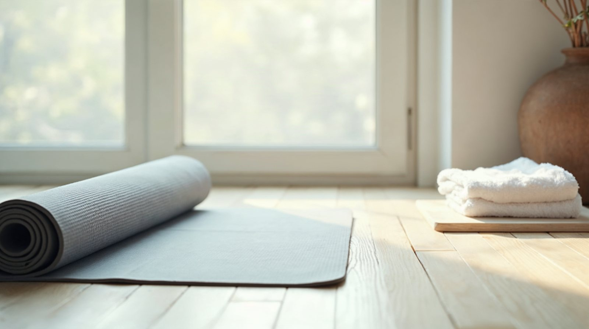
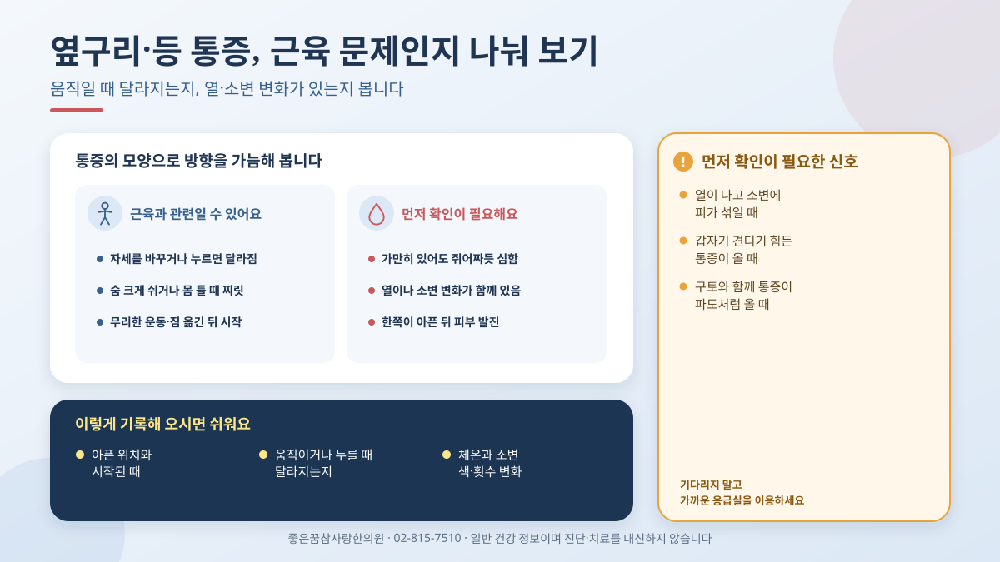

이종호 한의사 감수좋은꿈참사랑한의원 대표원장 (한의사 면허번호 19769)발행 2026-11-22 · 수정 2026-11-25
이 글의 차례
옆구리나 등 뒤쪽 통증이 몸을 틀거나 숨을 크게 쉴 때 달라지고 누르면 아픈 자리가 있다면 근육과 관련된 경우가 많습니다. 반대로 가만히 있어도 아프고 어떤 자세에서도 편하지 않거나, 열과 오한, 소변 볼 때의 통증, 소변 색 변화가 함께 있다면 콩팥이나 요로 같은 장기 문제를 먼저 확인해야 합니다.
특히 옆구리 통증과 함께 열이 나거나, 소변에 피가 비치거나, 식은땀과 구토를 동반한 심한 통증이 파도처럼 밀려온다면 한의원 진료를 기다리지 말고 내과·비뇨의학과나 가까운 응급실에서 먼저 확인을 받으세요. 한쪽 옆구리가 따끔거리다 며칠 뒤 띠 모양으로 물집이 올라오는 경우도 있어, 피부 변화가 보이면 피부과나 내과 진료가 먼저입니다.
왜 이런 불편이 생길 수 있나요
- 무리한 운동, 갑자기 몸을 비트는 동작, 오래 한쪽으로 기댄 자세는 옆구리와 등 근육을 긴장시킬 수 있습니다.
- 갈비뼈 사이 근육이 뭉치면 숨을 크게 쉬거나 기침하거나 몸을 틀 때 찌르듯 아플 수 있습니다.
- 콩팥이나 요로의 문제는 자세와 상관없이 아프고, 열이나 소변 변화가 함께 오는 경우가 많습니다.
- 대상포진처럼 피부 발진이 나타나기 전에 한쪽 옆구리가 먼저 따끔거리거나 화끈거리는 경우도 있습니다.
- 쓸개, 폐, 심장 쪽 문제도 등이나 옆구리 통증으로 느껴질 수 있어 함께 있는 증상을 같이 봅니다.
근육 쪽과 다른 원인을 나눠 보는 점
- 근육 쪽을 생각해 볼 때: 몸을 비틀거나 팔을 들 때, 숨을 크게 쉴 때 아프고 누르면 아픈 점이 있으며, 쉬거나 자세를 바꾸면 달라집니다. 시작 전에 무리한 운동이나 짐 옮기기가 있었던 경우가 많습니다.
- 콩팥·요로 쪽을 생각해 볼 때: 가만히 있어도 아프고 편한 자세를 찾기 어려우며, 통증이 아랫배나 사타구니로 뻗치기도 합니다. 소변이 자주 마렵거나 볼 때 아프고 색이 붉거나 탁하며, 열과 오한이 함께 오기도 합니다.
- 피부 쪽을 생각해 볼 때: 한쪽으로만 띠 모양으로 따끔거리고 옷이 스치기만 해도 아프며, 며칠 사이 붉은 반점이나 물집이 생깁니다.
- 그 밖에: 기름진 식사 뒤 오른쪽 갈비뼈 아래가 아프고 오른쪽 어깨 뒤로 뻗치는 경우, 기침·열·숨참이 함께 있는 경우, 가슴 답답함과 식은땀이 함께 있는 경우는 내과나 응급실 확인이 먼저입니다.
먼저 이렇게 여쭙니다
- 열이 나거나 오한, 구역질이 함께 있나요?
- 소변을 볼 때 아프거나, 자주 마렵거나, 색이 붉거나 탁해졌나요?
- 아픈 쪽 피부가 따끔거리거나 무언가 올라왔나요?
- 몸을 틀거나 숨을 크게 쉴 때 아픈가요, 가만히 있어도 아픈가요?
- 누르면 아픈 점이 있나요?
- 통증이 시작되기 전 무리한 운동이나 이사, 짐 옮기기가 있었나요?

일상에서 먼저 해 볼 수 있는 것
열, 소변 변화, 피부 변화가 없고 움직일 때만 아픈 경우에 해 볼 수 있는 것들입니다.
- 통증이 있는 동안 아침저녁으로 체온을 재고, 소변 색과 횟수를 확인해 두기
- 아픈 쪽으로 몸을 비틀거나 무거운 것을 드는 동작을 며칠 줄이기
- 한쪽으로 기대 앉거나 한쪽 어깨에만 가방을 메는 습관 줄이기
- 오래 앉아 있다면 40~50분마다 일어나 가볍게 몸을 펴기
- 이유가 분명하지 않은 통증은 찜질이나 진통제로 덮어 두기보다 먼저 확인하기
상황별 예시
- 예를 들어 이사나 대청소로 상자를 들고 몸을 비튼 다음 날 한쪽 옆구리가 결리는 경우, 열이나 소변 변화가 없고 몸을 돌릴 때만 아프다면 며칠은 비트는 동작을 줄이고 경과를 적어 봅니다.
- 예를 들어 바쁜 직장인이 물을 적게 마시다 어느 날 밤 한쪽 옆구리가 쥐어짜듯 아프고 식은땀과 구역질이 나는 경우, 근육통으로 여기고 참기보다 바로 응급실이나 비뇨의학과에서 확인을 받습니다.
- 예를 들어 어르신이 한쪽 옆구리가 며칠째 화끈거리고 옷이 스치기만 해도 아파하시는 경우, 피부에 붉은 반점이나 물집이 생기는지 살피고 보이면 바로 피부과나 내과 진료를 받습니다.
스스로 점검해 보세요
- 몸을 틀거나 숨을 크게 쉴 때만 아프다
- 손가락으로 누르면 콕 집어 아픈 자리가 있다
- 아프기 전에 무리한 운동이나 짐 옮기기가 있었다
- 가만히 누워 있어도 아프고 편한 자세가 없다
- 열이 나거나 오한이 든다
- 소변 볼 때 아프거나 색이 붉거나 탁하다
- 아픈 쪽 피부가 따끔거리거나 붉은 반점이 보인다
앞의 세 가지는 근육 쪽 통증에서 흔한 모습이고, 뒤의 네 가지 중 하나라도 해당하면 한의원보다 해당 진료과나 응급실 확인이 먼저입니다.
한의원에서 함께 살필 수 있는 경우
- 열이나 소변 변화 없이 움직일 때 옆구리나 등이 결리는 경우 근육과 자세를 함께 살핍니다.
- 다른 진료과에서 확인을 받은 뒤에도 근육 쪽 결림이 남은 경우 검사 결과를 참고해 이어서 살핍니다.
- 비트는 동작이나 한쪽으로 기대는 자세가 잦아 같은 쪽이 반복해서 결리는 경우 생활 습관을 함께 살핍니다.
- 소변 변화나 열감이 함께 있는 경우에는 내과·비뇨의학과 진료를 먼저 권합니다.
좋은꿈참사랑한의원에서는 첫 방문 때 언제부터, 어떤 동작에서 아픈지와 함께 열, 소변, 피부 변화를 먼저 여쭙고, 이런 신호가 있으면 해당 진료과 확인을 먼저 안내합니다. 위험 신호가 없다면 모든 분께 맥을 짚고, 서 있는 자세와 몸 돌리기·옆으로 굽히기·깊은 숨쉬기 같은 움직임, 누르면 아픈 자리를 확인합니다.
근육 상태를 눈으로 볼 필요가 있다고 판단되면 초음파를 함께 씁니다. 근육과 관련된 통증으로 보이면 침·약침·추나·온열 가운데 상태에 맞는 방법을 정하고 그 이유를 설명해 드립니다. 귀가 전에는 피할 동작과 집에서 지켜볼 점, 다음에 다시 확인할 동작을 알려 드립니다.
얼마나 지켜보고 언제 상담할까요
- 열·소변 변화·피부 변화가 없고 움직일 때만 아프다면, 무리한 동작을 줄이며 며칠 경과를 지켜볼 수 있습니다.
- 1~2주가 지나도 같은 동작에서 계속 아프거나 잠을 설칠 만큼 아프다면 진료를 받아 보세요.
- 지켜보는 동안 열이 나거나 소변 색이 달라지거나 통증이 점점 심해지면 그때 바로 병원 확인을 받습니다.
- 처음부터 견디기 힘들 만큼 아프다면 지켜보지 말고 가까운 응급실로 가세요.
이렇게 기록해 오시면 상담이 쉬워집니다
- 아픈 위치(오른쪽·왼쪽, 갈비뼈 아래·허리 위)와 시작된 때
- 움직이거나 누를 때 달라지는지, 숨 쉴 때 아픈지
- 체온과 소변 색·횟수의 변화
- 최근에 한 운동이나 무거운 일
- 다른 병원에서 받은 소변·혈액·영상 검사 결과와 복용 중인 약
이런 증상은 먼저 확인이 필요합니다
- 옆구리 통증과 함께 열이나 오한이 있는 경우
- 소변에 피가 섞이거나, 소변 볼 때 아프고 자주 마려운 경우
- 갑자기 견디기 힘든 통증이 파도처럼 오고 구토나 식은땀이 나는 경우
- 한쪽으로 띠 모양 통증과 함께 붉은 반점이나 물집이 생긴 경우
- 가슴이 답답하거나 숨이 차면서 등이 아픈 경우, 갑자기 찢어지는 듯한 등 통증이 온 경우
- 임신 중이거나 임신 가능성이 있는 분의 옆구리·아랫배 통증
위 신호는 한의원 진료로 대신하지 않습니다. 열과 소변 변화는 내과·비뇨의학과에서, 피부 변화는 피부과에서 먼저 확인을 받으시고, 통증이 심하거나 가슴 답답함·숨참이 함께 있으면 지체하지 말고 가까운 응급실로 가세요. 복용 중인 약은 처방한 의사와 상의 없이 줄이거나 끊지 않습니다.
관련 글
- 허리가 아파서 왔는데 대변과 소변은 왜 묻나요?
- 근육이 아픈 것인지 관절이 아픈 것인지 어떻게 짚어서 말하나요?
- 이사나 대청소 뒤 허리와 어깨가 결릴 때 추나는 어떻게 살피나요?

여쭙는 것
- 열이 나거나 오한, 구역질이 함께 있나요?
- 소변을 볼 때 아프거나, 자주 마렵거나, 색이 붉거나 탁해졌나요?
- 아픈 쪽 피부가 따끔거리거나 무언가 올라왔나요?
생활에서 해 볼 것
- 통증이 있는 동안 아침저녁으로 체온을 재고, 소변 색과 횟수를 확인해 두기
- 아픈 쪽으로 몸을 비틀거나 무거운 것을 드는 동작을 며칠 줄이기
- 한쪽으로 기대 앉거나 한쪽 어깨에만 가방을 메는 습관 줄이기
한의원에서 함께 살필 것
- 열이나 소변 변화 없이 움직일 때 옆구리나 등이 결리는 경우 근육과 자세를 함께 살…
- 다른 진료과에서 확인을 받은 뒤에도 근육 쪽 결림이 남은 경우 검사 결과를 참고해…
- 비트는 동작이나 한쪽으로 기대는 자세가 잦아 같은 쪽이 반복해서 결리는 경우 생활…
먼저 확인이 필요한 신호
- 옆구리 통증과 함께 열이나 오한이 있는 경우
- 소변에 피가 섞이거나, 소변 볼 때 아프고 자주 마려운 경우
- 갑자기 견디기 힘든 통증이 파도처럼 오고 구토나 식은땀이 나는 경우
한눈에 보는 표
| 구분 | 핵심 |
|---|---|
| 여쭙는 것 | 열이 나거나 오한, 구역질이 함께 있나요? 소변을 볼 때 아프거나, 자주 마렵거나, 색이 붉거나 탁해졌나요? |
| 생활에서 해 볼 것 | 통증이 있는 동안 아침저녁으로 체온을 재고, 소변 색과 횟수를 확인해 두기 아픈 쪽으로 몸을 비틀거나 무거운 것을 드는 동작을 며칠 줄이기 |
| 한의원에서 함께 살필 것 | 열이나 소변 변화 없이 움직일 때 옆구리나 등이 결리는 경우 근육과 자세를 함께 살핍니다. 다른 진료과에서 확인을 받은 뒤에도 근육 쪽 결림이 남은 경우 검사 결과를 참고해 이어서 살핍니다. |
| 먼저 확인이 필요한 신호 | 옆구리 통증과 함께 열이나 오한이 있는 경우 소변에 피가 섞이거나, 소변 볼 때 아프고 자주 마려운 경우 |
자주 묻는 질문
근육통인지 장기 통증인지 스스로 알 수 있나요?
움직일 때만 아프고 누르면 아픈 점이 있는지가 단서가 되지만 스스로 구분하기는 어렵습니다. 열이나 소변 변화 같은 신호가 있으면 먼저 내과 진료를 권합니다.
찜질을 해도 되나요?
열이 있거나 이유가 분명하지 않은 통증에는 찜질로 덮어 두기보다 먼저 확인을 권합니다. 근육 쪽 결림으로 확인된 뒤에는 따뜻하게 하는 것이 편한 분도 많습니다.
근육통 같으면 바로 침을 맞아도 되나요?
열이나 소변 변화 같은 신호가 없는지 먼저 확인한 뒤, 근육과 관련된 통증으로 보이면 상태에 맞는 방법을 함께 정합니다.
다른 병원에서 검사했는데 이상이 없다고 하면요?
검사 결과를 가져오시면 참고해 근육과 자세 쪽을 이어서 살핍니다. 지켜보는 동안 열이나 소변 변화가 새로 생기면 다시 병원 확인을 받으세요.
좋은꿈참사랑한의원은 재진 때 지난번 이야기부터 이어서 여쭙니다. 진료시간과 예약은 오시는 길에서 확인하세요.
어디서 상담받을 수 있나요?
좋은꿈참사랑한의원은 서울 동작구 만양로2길 2 신성빌딩 3층·5층(서울 동작구 상도동, 7호선 상도역 3번 출구 근처)에 있습니다. 한의사 3명(이종호 대표원장, 조영기 수석진료원장, 정원영 진료원장)이 진료합니다. 진료시간은 평일 09:30~20:00(점심 13:00~14:00), 토·일·공휴일 09:30~15:00이며, 방문 전 전화로 확인을 권합니다. 예약은 네이버 예약, 카카오톡 상담, 전화 02-815-7510로 받습니다.
이 글은 일반적인 건강 정보이며 개인의 진단이나 치료를 대신하지 않습니다. 증상이 있거나 복용 중인 약이 있다면 진료를 통해 확인하세요. 치료 효과는 개인마다 다를 수 있습니다.
작성 기준: 일반적으로 알려져 있는 건강 정보를 참고해 정리했습니다(대표원장 감수). 증상 기록은 1~2주 동안 하루 1회, 비슷한 시간에 적어 오시면 지난 상태와 비교하기 쉽습니다.